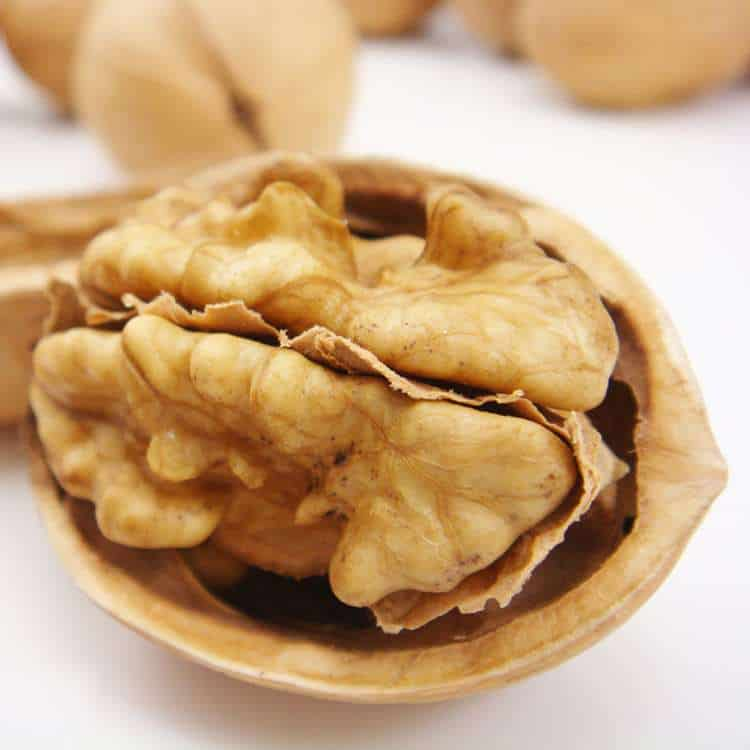

Nueces
La nuez obtenida del nogal (Juglans regia L.), se consume desde épocas prehistóricas. Algunos investigadores señalan a Persia como la cuna de esta especie, pero su origen no ha sido definido claramente, dado que otros se lo adjudican a Asia del Este, el Sureste de Europa y el norte de América. En el territorio argentino su cultivo se inició alrededor del año 1600, por disposición de las autoridades españolas. Actualmente los establecimientos productores se hallan en las provincias de La Rioja, Catamarca, Mendoza, San Juan y Río Negro.La variedad Chandler es de origen Californiano, resalta por su cascara blanda y pulpa de color claro, de sabor suave y agradable. El consumo de este fruto aporta innumerables beneficios al organismo, a través de su alto contenido en proteínas, vitaminas, aminoácidos y aceites.
Propiedades de la Nuez
Las nueces están llenas de nutrientes. Son una excelente fuente de proteínas y ácidos grasos esenciales como el Omega-3. Los núcleos son ricos en vitaminas y minerales como tiamina, folato, manganeso y muchos más. Previene enfermedades cardiovasculares. Es bueno para nuestro cerebro.Ayuda a la pérdida de peso (controla el apetito). Cuida nuestra piel (vitamina E) ,reduce arrugas. Previene la osteoporosis, etc.
| Información nutricional | Cada 100 grs. |
|---|---|
| Calorías | 649 Kcal |
| Carbohidratos | 4,4 g. |
| Proteínas | 14,42 g |